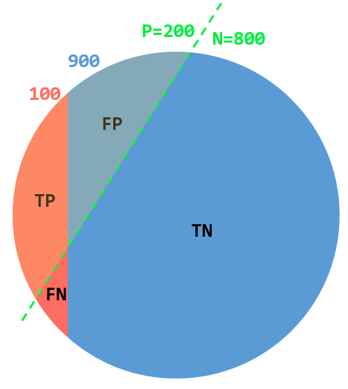
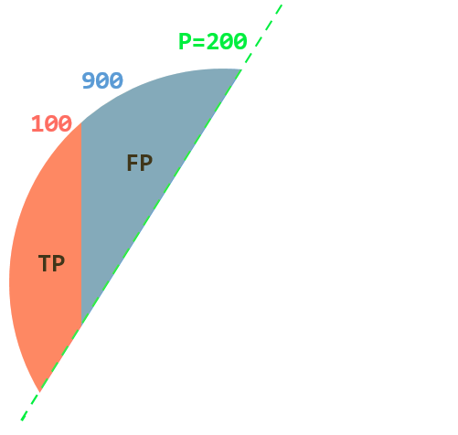
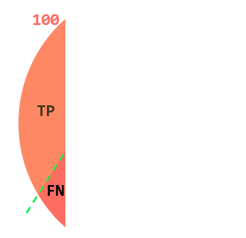
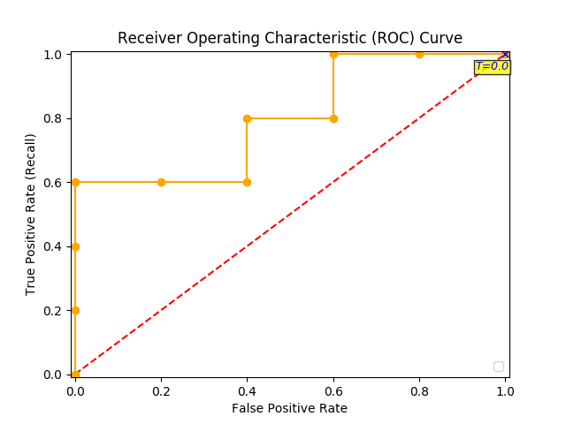
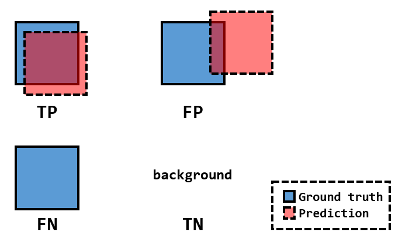

指标
题目一（基本概念）
假设有1000个人。我们用上帝视角知道，患病的有100个，不患病的有900个。
| 患病（FN+TP） | 不患病（TN+FP） | 总数（FN+TP+TN+FP） |
|---|---|---|
| 100 | 900 | 1000 |
然后我们有医生，医生一个个检查完这1000个人。判定结果为患病200个，不患病800个。
| 患病（P） | 不患病（N） | 总数（P+N） |
|---|---|---|
| 200 | 800 | 1000 |
实际情况如图：

| FN = FN | TP = 100-FN |
|---|---|
| TN = 800-FN | FP = 100+FN |
分析一
True/False是指：是否判断对了/是否符合事实（例如，得病说没病or没病说得病，则属于False）
Positive/Negative是指：医生的判断结果（例如，你说他有病，则属于Positive）
FN： 判断错了（false），表明真实情形是“患病”
FP： 判断错了（false），表明真实情形是“不患病”
- TP： 判断对了（true），就是”患病“
- TN： 判断对了（true），就是”不患病“
Precision

Recall

F1-score
是P和R的综合考量，本质是$\frac{1}{F}=\frac{1}{2}(\frac{1}{R}+\frac{1}{P})$
Accuracy
ROC曲线（Receiver Operating Characteristic Curve）
- TruePositiveRate就是Recall，$\frac{TP}{TP+FN}$（患病中有多少被正确诊断为有病，越高越好）
- FalsePositiveRate为$\frac{FP}{FP+TN}$（健康中有多少被误诊成有病，越低越好）
假设我们的医生可以给出一个“概率值”表示该人患病的概率是多少。那么我们需要设定一个阈值，例如0.6，将0.6以上的全部认为是Positive，以下的全部认为是Negative，则我们得到了一个判别器。
若要画ROC曲线，你则需要以“TruePositiveRate”为纵坐标，“FalsePositiveRate”为横坐标，以“阈值”为滑动变量（从1滑动到0），则你能在平面画出ROC曲线（其中的点代表某一个阈值下的“TruePositiveRate”和“FalsePositiveRate”）。

AUC（Area Under the Curve）
就是ROC曲线下的面积，数值越高越好（最高是1）

题目二（Detection）
相关链接：Detection Evaluation
在detection任务中，
- IoU：用来控制True/False（我们需要设定一个IoU阈值，用来判定predict box是否属于ground truth）
- score：用来控制Positive/Negative（我们需要一个分数阈值，分数过低的box会被筛掉，剩下的box则属于Positive）

在一张图片中，我们有很多的objects。因此我们就可以计算出这张图片的Precision和Recall（在给定IoU threshold和score threshold的条件下）
- COCO的指标：在多个IoU threshold = {0.05, 0.15, 0.25, …, 0.95}的条件下，计算多个AP值
- PASCAL VOC的指标：在IoU threshold = 0.5的条件下，计算mAP值
IoU、PR曲线、AP和mAP
IoU是两个boxes的交集面积除以并集面积。不过要求两个boxes的label一致时才能用面积法计算，否则IoU是零（此时必定是FP）。
下面默认在IoU threshold = 0.5时讨论。AP是在“precision-recall曲线（PR曲线）”$precision = PR(recall)$中，当recall值分别为$ \{ 0, 0.1, 0.2, …, 1.0 \} $这11个数时，对应的precision的算术平均值，即：
换句话说，我们需要选取11个不同的score threshold，使得recall值分别为$\{0, 0.1, 0.2, …, 1.0\}$，然后计算precisions的算术平均值，即是AP（一般来说，precision值都是通过插值得到的），有点类似于PR曲线底下的面积
每一个class都计算一个AP值，然后将所有classes的AP取算术平均就得到mAP。
注：
- AP == Average Precision
- mAP = mean Average Precision
- AP是每个class都有一个，而mAP是所有classes的AP值的算术平均
- “precision-recall曲线”：在不同的score threshold下，画出的precision和recall的曲线。与ROC曲线类似。
- 如果IoU threshold有多个，则mAP值也有多个。